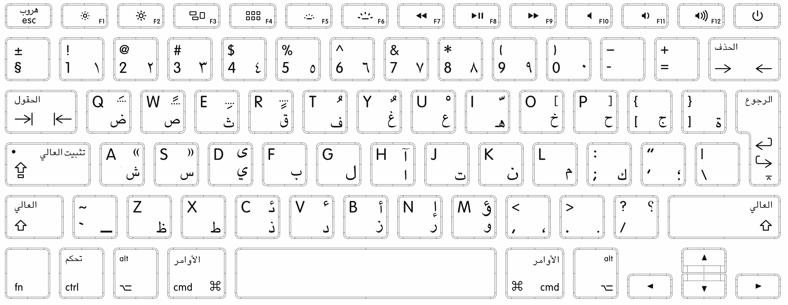
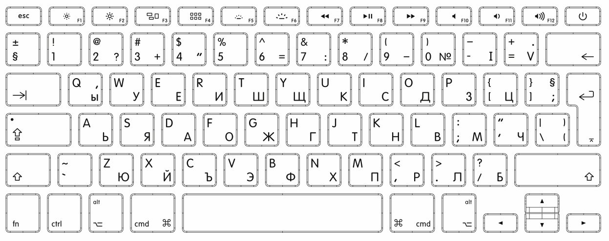
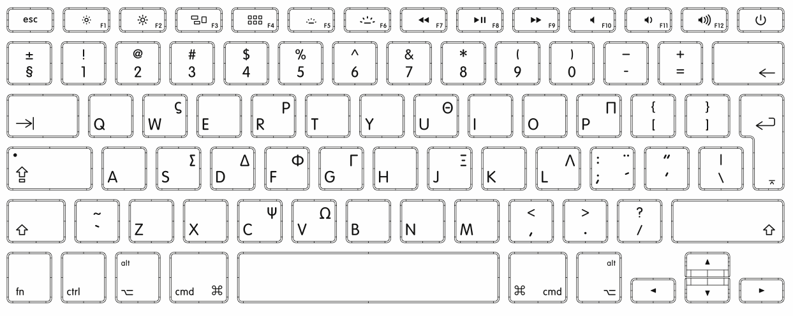
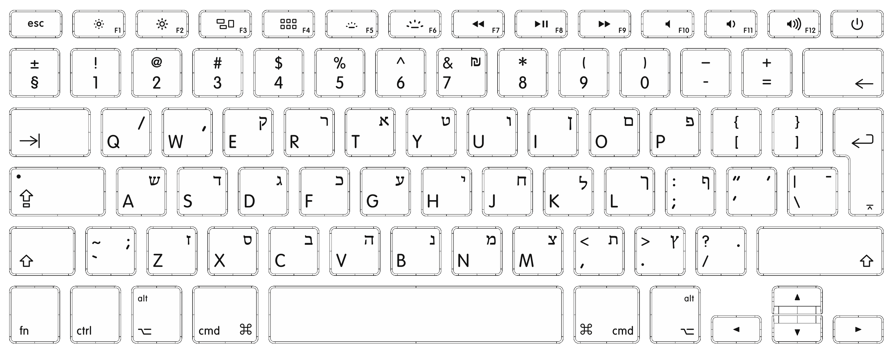
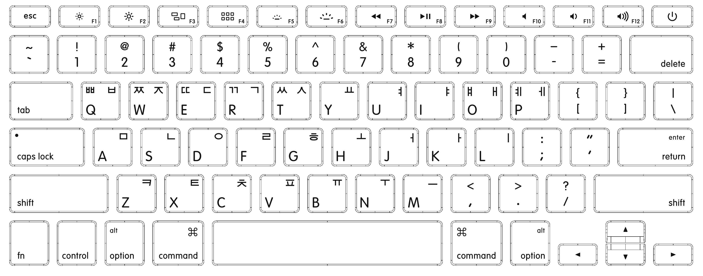
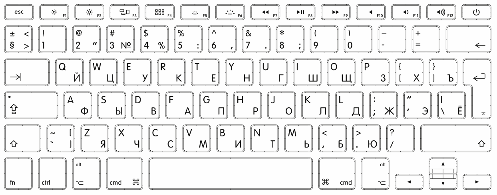
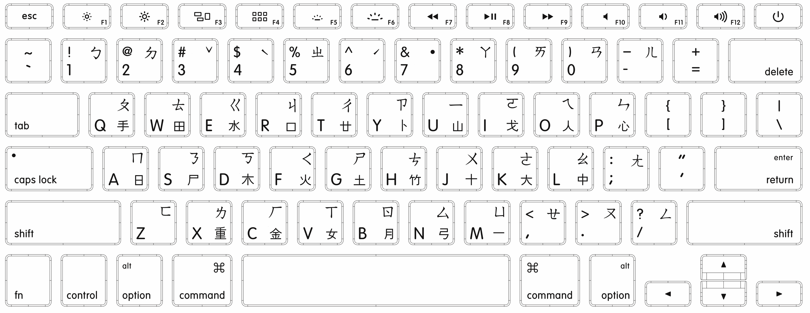
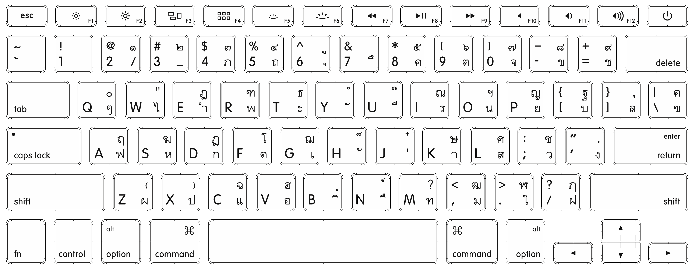
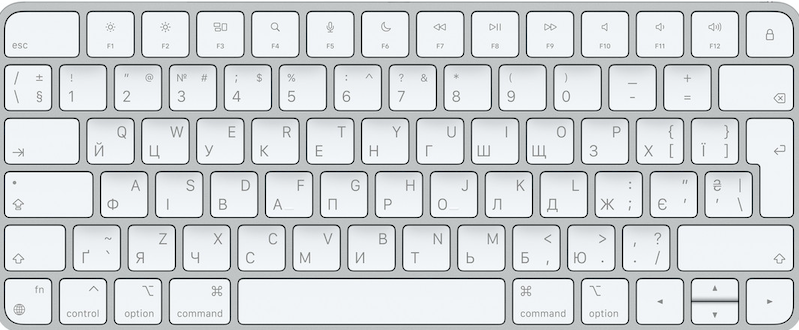

Apple Hardware Keyboards for Non-Latin Scripts
Apple makes hardware keyboards for the following 10 non-Latin scripts: Arabic, Bulgarian*, Greek*, Hebrew, Japanese, Korean, Russian, Chinese (Zhuyin), Thai*, and Ukrainian.
The printing on all of these keyboards is bilingual: In additiion to the non-Latin characters, they also have the Latin letters of the US layout printed on the keys, so that users will not have a problem typing email and web addresses in that script.
The keyboards marked with an asterisk are not available in the US online store and may be difficult to find outside the country where they are used.
Below are graphics of these keyboards so users can see how the Latin and non-Latin characters are arranged before deciding to purchase.
Arabic

Bulgarian

Greek

Hebrew

Japanese

Korean

Russian

Chinese (Zhuyin)

Thai

Ukrainian
